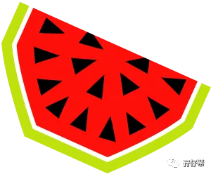
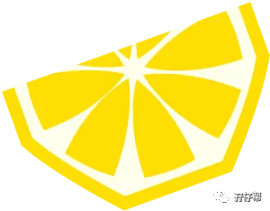
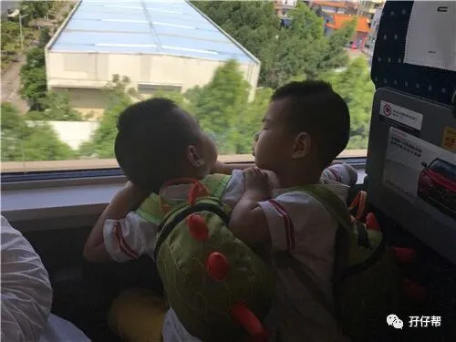
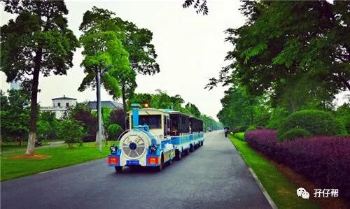
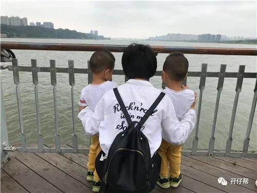
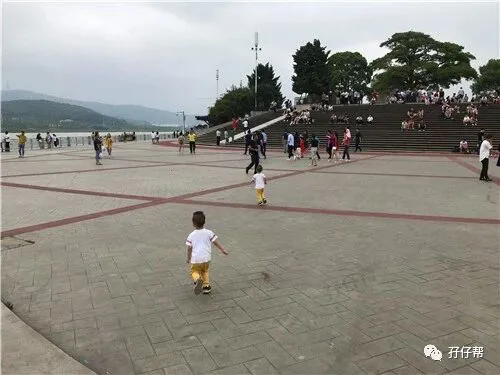
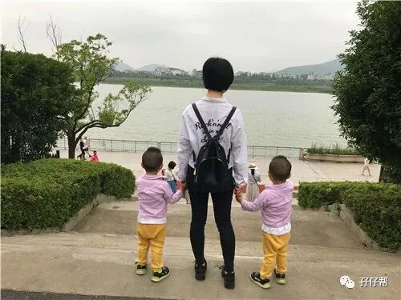
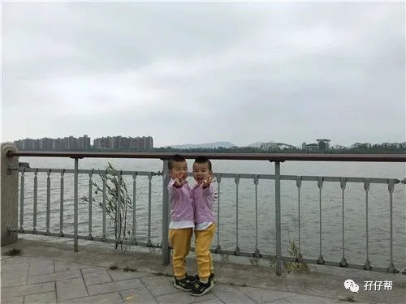

孖仔帮
与您分享双胞胎育儿路上的囧人囧事
暗中观察
默默关注
背景，圆圈兄弟2岁10个月
地点：长沙·橘子洲头
人物：双胞胎圆圆&圈圈，圆圈爸，圆圈妈，圆圈奶奶，圆圈姑姑
01
这是篇迟来的旅行日记！
现在恢复自由身，终于可以整理下圆圈兄弟这三年来的旅行足迹啦！
圆圈爸是湖南汉子，当我和圆圈爸还处于“你侬我侬”的时候去过一次橘子洲，那也是我第一次踏出广东省。
这次带上我们的爱情结晶---两个儿子，一起前行，真是别有一番滋味在心头！
此篇长沙橘子洲旅行攻略的特点是亲子游+闲逛
简单介绍下橘子洲头：
橘子洲风景区位于长沙市市区对面的湘江江心，是湘江中最大的名洲，由南至北，横贯江心，西望岳麓山，东临长沙城，四面环水，绵延数十里，狭处横约40米，宽处横约140米，形状是一个长岛。
深圳到长沙800多公里，考虑到路途遥远，且圆圈对坐高铁的高度期待，我们放弃自驾游，订了高铁票直达长沙南。
5月26日这天，9点半深圳北站发车。
进站的时候，看到一列列高铁停靠在站台上，圆圈惊叫连连。也许是受托马斯玩具小火车的影响，圆圈兄弟俩对轨道交通系列的玩具简直是“走火入魔”的境界。
刚上车那会，每一辆呼啸而过的高铁都能刺激到他们的每一处神经细胞，整个车厢都是他们哥俩兴奋尖叫的声音！
到达长沙南，已经是12点50分了。
出站后转地铁到预订的7天酒店，该酒店就在湘雅医院附近。因为此次长沙之行，还要去看望生病住院的圆圈奶奶。
入住登记后顺便吃个中饭火急火燎赶去医院，此时已经是下午两点钟了。
看到阔别三个月的圆圈奶奶，哥俩一点都不生疏。整个医院都是哥俩大声喊奶奶的声音，一个抱大腿，一个搂脖子，又亲又啃，可把圆圈奶奶激动到大哭！
在医生的恩准下，圆圈奶奶得以外出游玩半天，我们的橘子洲之行开始啦！
圆圈爸事先查了下路况，果然那一片塞车，只好坐地铁去了。
02
其实，16年国庆节，我们在友人的邀约下去了一趟橘子洲。但是被地铁口那黑压压的人群吓到落荒而逃，我们只能远远地看着观光小火车遗憾地挥挥手…
这一次，终于可以坐上圆圈心心念念的观光小火车啦！因此我们出站后直奔小火车售票点。
温馨提示：橘子洲风景区是门票是免费的，可自由出入。观光游览车需另行购票，成人票一人20元（中途有5个站点可以分别上下1次)。
来看下俘获圆圈芳心的小火车长什么样的，看图！萌萌哒！是经典的托马斯造型哦！
圆圈被迷得神魂颠倒，车还没停稳，就立马扑了上去，还好被我们及时拦腰抱住了。
人不多，都是些散客和一些大妈级别的旅行团，排队等候了10分钟左右就轮到我们了。
我们坐上小火车直达终点站，走了一小段路，就看到毛主席的大头像了。可惜来的不是时候啊，毛主席头像正在装修维护中，被绿网盖住了。
五月份的长沙，不像深圳早已骄阳似火了，此刻的天空灰蒙蒙的一片，反而显得毛爷爷的大头照更加威严肃穆。
好吧！没有现场直播，我只好拿出百元大钞很努力地给圆圈解释：“被绿网盖住的头像是一位神奇的人物，有了他才有我们今天的幸福生活，而是还跟圆圈爸是老乡哦！”
圆圈恍然大悟，异口同声地说：“哦…”
历史人物的介绍完毕之后，我们一路走走停停，很快就来到了洲头广场。
这就是橘子洲的最南端了。
可以360度无死角地领略到湘江的韵味，还可以看到东边的商业街和万达广场，还有西边的岳麓山。
这跟欣赏深圳红树林不一样的感觉，但有异曲同工之妙…哈哈！
“独立寒秋，湘江北去，橘子洲头…”
伟人真会挑地方作诗。
面对宽阔的江面，看着滔滔江水，真的有一种“问苍茫大地，谁主沉浮”的感慨哦。
可惜了圆圈兄弟还小，还体会不到那种指点江山的壮志豪情！
希望如此这般大气恢弘的美景能深刻印在他们幼小的心灵深处，不奢望他们能像毛主席那样功德无量，只希望是个对社会有贡献的人就行了。
这也是我和圆圈爸喜欢带着圆圈到处旅行的初衷：让大自然的鬼斧神工去浇灌他们内心最纯粹的那片净土…
在洲头广场和望江亭溜达了一会，已经是下午4点钟左右了。考虑到圆圈奶奶养病在身，只好提前打道回府了。
03
我们回程往观光小火车停靠站的方向走，看到有几艘船只在江面上飘摇着。
原来还有游轮项目可以玩哦，费用80元。感觉不是很值哦，还不如去广州夜游珠江。
如果不是太匆忙，橘子洲真的很适合散步闲聊瞎逛，凭我们一家四口奇葩的体力从入口走到毛主席雕塑前应该不是问题。
沿途除了一些景点外，还可以看到很多小清新的场景。
一些小家庭带着孩子，在草坪上铺上垫子在打牌，老人家带着小孙子一边遛娃一边散步，
还有一群小孩子在草坪上肆意奔跑放风筝…
虽然是坐在小火车上匆匆一瞥，但看到这些温馨有趣的场景，情不自禁笑了….
我在想，我和圆圈爸带着圆圈去看风景，我们也不知不觉成为了别人眼中的一道风景。
可惜了圆圈兄弟刚坐上回程的小火车就睡着了（其实后面才知道，原来他们是疱疹性咽颊炎潜伏期，已经开始有点发烧了。）
坐在古典的小火车上，我依靠在圆圈爸的肩膀上，吹着江风，抱着孩子，看着美景，醉了…
我生命中的三个男人都在我身边跟我一起欣赏着夕阳下的橘子洲…
在大深圳待久了，偶尔体验下这种慢生活，实乃人生一大快事啊！
04
圆圈妈有话说：
★橘子洲实在是太大了，成年人全程走完要两三个小时，从地铁站出口到毛主席的大头照起码有3公里，若来回步行走完约6公里。
孩子体力有限，建议带孩子的家长坐观光小火车，沿途有5个站点可以上下车，可以根据行程安排自行决定。
★橘子洲景区的设计有点奇葩，居然只有一个出口，也难怪16年橘子洲沦陷了，那些游客进不去出不来，全堵在门口了。
小提示：长沙地铁2号线到【橘子洲】站下车，D出口出来就是了橘子洲的入口啦。
★我每一篇亲子游的注意事项都会敲黑板让家长自备干粮和饮用水，这次也不例外！
也许是我们全程坐小火车只是走马观花看了下，但沿途好像真的没有看到小摊贩或便利店。
适当的零食诱惑可以让你的亲子游顺利不少哦…
★橘子洲的围栏有部分地方缺失，带着孩子的家长尽量不让孩子依靠在围栏上，要时刻看住孩子，别只顾着拍照哦。
1
END
1
本文系圆圈妈sgguy-com原创，来源于孖仔帮，专注双胞胎孕期育儿经验分享，著作权归孖仔帮所有。
长按识别二维码关注我们
孖仔帮
与您分享双胞胎育儿路上的囧人囧事
近日发现有些平台未经允许转载了圆圈妈的文章，在此声明下：
若喜欢圆圈妈的文章，无条件欢迎大家分享转发到朋友圈，如需转载至公众号请联系圆圈妈（微信sgguy-com）授权，或扫以下微信二维码。
各位双胎妈妈，更多孖仔帮原创育儿文章请猛戳 "阅读原文" ，或者直接上圆圈妈的个人博客，大把双胎孕期育儿心得经验分享。
阅读原文：
https://www.sgguy.com/twinsbang







